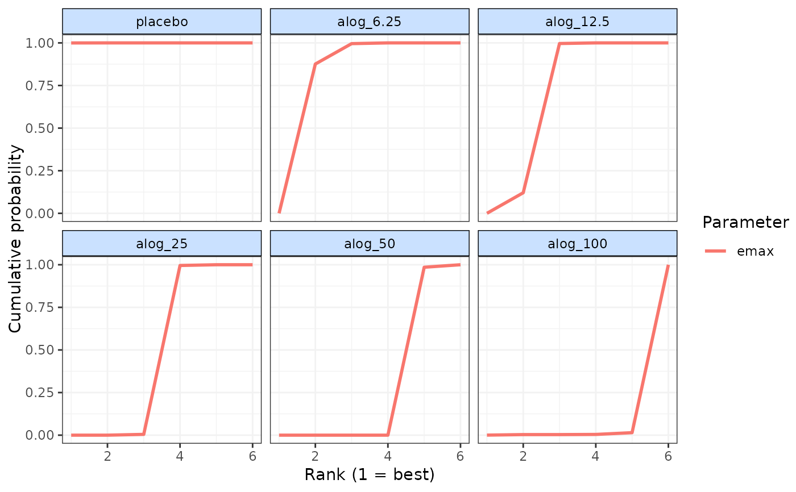

Plot cumulative ranking curves from MBNMA models
cumrank.RdPlot cumulative ranking curves from MBNMA models
Arguments
- x
An object of class
"mb.rank"generated byrank.mbnma()- params
A character vector containing any model parameters monitored in
mbnmafor which ranking is desired (e.g."beta.1","emax"). Parameters must vary by treatment for ranking to be possible. Can include"auc"(see details).- sucra
A logical object to indicate whether Surface Under Cumulative Ranking Curve (SUCRA) values should be calculated and returned as a data frame. Areas calculated using
readWKT.- ...
Arguments to be sent to
ggplot::geom_line()
Value
Line plots showing the cumulative ranking probabilities for each agent/class and
dose-response parameter in x. The object returned is a list which contains the plot
(an object of class(c("gg", "ggplot")) and a data frame of SUCRA values
if sucra = TRUE.
Examples
# \donttest{
# Using the alogliptin data
network <- mb.network(alog_pcfb)
#> Reference treatment is `placebo`
#> Studies reporting change from baseline automatically identified from the data
# Estimate rankings from an Emax dose-response MBNMA
emax <- mb.run(network, fun=temax())
#> 'et50' parameters must take positive values.
#> Default half-normal prior restricts posterior to positive values.
#> Change from version 0.2.2 onwards: corparam=FALSE as default
#> Compiling model graph
#> Resolving undeclared variables
#> Allocating nodes
#> Graph information:
#> Observed stochastic nodes: 233
#> Unobserved stochastic nodes: 38
#> Total graph size: 4166
#>
#> Initializing model
#>
ranks <- rank(emax, params=c("emax", "et50", "auc"))
#>
|
| | 0%
|
| | 1%
|
|= | 1%
|
|= | 2%
|
|== | 2%
|
|== | 3%
|
|== | 4%
|
|=== | 4%
|
|=== | 5%
|
|==== | 5%
|
|==== | 6%
|
|===== | 6%
|
|===== | 7%
|
|===== | 8%
|
|====== | 8%
|
|====== | 9%
|
|======= | 9%
|
|======= | 10%
|
|======= | 11%
|
|======== | 11%
|
|======== | 12%
|
|========= | 12%
|
|========= | 13%
|
|========= | 14%
|
|========== | 14%
|
|========== | 15%
|
|=========== | 15%
|
|=========== | 16%
|
|============ | 16%
|
|============ | 17%
|
|============ | 18%
|
|============= | 18%
|
|============= | 19%
|
|============== | 19%
|
|============== | 20%
|
|============== | 21%
|
|=============== | 21%
|
|=============== | 22%
|
|================ | 22%
|
|================ | 23%
|
|================ | 24%
|
|================= | 24%
|
|================= | 25%
|
|================== | 25%
|
|================== | 26%
|
|=================== | 26%
|
|=================== | 27%
|
|=================== | 28%
|
|==================== | 28%
|
|==================== | 29%
|
|===================== | 29%
|
|===================== | 30%
|
|===================== | 31%
|
|====================== | 31%
|
|====================== | 32%
|
|======================= | 32%
|
|======================= | 33%
|
|======================= | 34%
|
|======================== | 34%
|
|======================== | 35%
|
|========================= | 35%
|
|========================= | 36%
|
|========================== | 36%
|
|========================== | 37%
|
|========================== | 38%
|
|=========================== | 38%
|
|=========================== | 39%
|
|============================ | 39%
|
|============================ | 40%
|
|============================ | 41%
|
|============================= | 41%
|
|============================= | 42%
|
|============================== | 42%
|
|============================== | 43%
|
|============================== | 44%
|
|=============================== | 44%
|
|=============================== | 45%
|
|================================ | 45%
|
|================================ | 46%
|
|================================= | 46%
|
|================================= | 47%
|
|================================= | 48%
|
|================================== | 48%
|
|================================== | 49%
|
|=================================== | 49%
|
|=================================== | 50%
|
|=================================== | 51%
|
|==================================== | 51%
|
|==================================== | 52%
|
|===================================== | 52%
|
|===================================== | 53%
|
|===================================== | 54%
|
|====================================== | 54%
|
|====================================== | 55%
|
|======================================= | 55%
|
|======================================= | 56%
|
|======================================== | 56%
|
|======================================== | 57%
|
|======================================== | 58%
|
|========================================= | 58%
|
|========================================= | 59%
|
|========================================== | 59%
|
|========================================== | 60%
|
|========================================== | 61%
|
|=========================================== | 61%
|
|=========================================== | 62%
|
|============================================ | 62%
|
|============================================ | 63%
|
|============================================ | 64%
|
|============================================= | 64%
|
|============================================= | 65%
|
|============================================== | 65%
|
|============================================== | 66%
|
|=============================================== | 66%
|
|=============================================== | 67%
|
|=============================================== | 68%
|
|================================================ | 68%
|
|================================================ | 69%
|
|================================================= | 69%
|
|================================================= | 70%
|
|================================================= | 71%
|
|================================================== | 71%
|
|================================================== | 72%
|
|=================================================== | 72%
|
|=================================================== | 73%
|
|=================================================== | 74%
|
|==================================================== | 74%
|
|==================================================== | 75%
|
|===================================================== | 75%
|
|===================================================== | 76%
|
|====================================================== | 76%
|
|====================================================== | 77%
|
|====================================================== | 78%
|
|======================================================= | 78%
|
|======================================================= | 79%
|
|======================================================== | 79%
|
|======================================================== | 80%
|
|======================================================== | 81%
|
|========================================================= | 81%
|
|========================================================= | 82%
|
|========================================================== | 82%
|
|========================================================== | 83%
|
|========================================================== | 84%
|
|=========================================================== | 84%
|
|=========================================================== | 85%
|
|============================================================ | 85%
|
|============================================================ | 86%
|
|============================================================= | 86%
|
|============================================================= | 87%
|
|============================================================= | 88%
|
|============================================================== | 88%
|
|============================================================== | 89%
|
|=============================================================== | 89%
|
|=============================================================== | 90%
|
|=============================================================== | 91%
|
|================================================================ | 91%
|
|================================================================ | 92%
|
|================================================================= | 92%
|
|================================================================= | 93%
|
|================================================================= | 94%
|
|================================================================== | 94%
|
|================================================================== | 95%
|
|=================================================================== | 95%
|
|=================================================================== | 96%
|
|==================================================================== | 96%
|
|==================================================================== | 97%
|
|==================================================================== | 98%
|
|===================================================================== | 98%
|
|===================================================================== | 99%
|
|======================================================================| 99%
|
|======================================================================| 100%
# Plot cumulative rankings for both dose-response parameters simultaneously
# Note that SUCRA values are also returned
cumrank(ranks)

#> # A tibble: 18 × 3
#> treatment parameter sucra
#> <fct> <chr> <dbl>
#> 1 placebo auc 5
#> 2 placebo emax 5
#> 3 placebo et50 0.5
#> 4 alog_6.25 auc 4.42
#> 5 alog_6.25 emax 4.35
#> 6 alog_6.25 et50 4.24
#> 7 alog_12.5 auc 3.19
#> 8 alog_12.5 emax 3.61
#> 9 alog_12.5 et50 2.08
#> 10 alog_25 auc 2.04
#> 11 alog_25 emax 2.48
#> 12 alog_25 et50 1.97
#> 13 alog_50 auc 0.926
#> 14 alog_50 emax 1.42
#> 15 alog_50 et50 3.80
#> 16 alog_100 auc 1.93
#> 17 alog_100 emax 0.640
#> 18 alog_100 et50 4.92
# }